Experince on Tembea Game Drives. A veritable wildlife haven blessed with a year-round, rather mind-boggling concentration of animals, the Tembea certainly doesn’t disappoint. Embark on twice-daily interpretive game drives with expert rangers who will uncover the wonders of the Tembea.
Explore the open Savanna on foot. Reconnect with your spirit of adventure and follow in the footsteps of ancient explorers and local herdsmen on a once-in-a-lifetime guided walking safari. Heighten your senses without the hum of the safari vehicle … listen to the crickets, breathe the fresh air, view the limitless horizon and appreciate the African soil on the soles of your shoes.
Celebrate the sunset with Tembea warriors. Drive up onto the Oloololo (which aptly means “zig-zag”) escarpment for the most unforgettable sundowners overlooking the vast Mara plains, as well as the Serengeti in the distance. As the sun gently dips over the horizon, stand around a blazing fire, complete with delicious snack and a full bar and bartender, and watch in awe as Tembea warriors perform their traditional song and dance..
Recreate your favourite scene from Out of Africa. Out of Africa, the epic film that made the entire world fall in love with Kenya recently celebrated its 30th anniversary. Avid film fanatics and romantics at heart can retrace the steps of Meryl Streep and Robert Redford and visit the exact locations of some of the movie’s most famous scenes.
| Services | Support Staff | Emaild Address | |
|---|---|---|---|
| Experince on Tembea Game Drives | A veritable wildlife haven blessed with a year-round, rather mind-boggling concentration of animals, the Tembea certainly doesn’t disappoint. Embark on twice-daily interpretive game drives with expert rangers who will uncover the wonders of the Tembea. | Jualina Martin | julianamartin@gmail.com |
| Explore the open Savanna on foot | Reconnect with your spirit of adventure and follow in the footsteps of ancient explorers and local herdsmen on a once-in-a-lifetime guided walking safari. Heighten your senses without the hum of the safari vehicle … listen to the crickets, breathe the fresh air, view the limitless horizon and appreciate the African soil on the soles of your shoes. | Kenty Cynthia | kentycynthia@gmail.com |
| Celebrate the sunset with Tembea warriors | Drive up onto the Oloololo (which aptly means “zig-zag”) escarpment for the most unforgettable sundowners overlooking the vast Mara plains, as well as the Serengeti in the distance. As the sun gently dips over the horizon, stand around a blazing fire, complete with delicious snack and a full bar and bartender, and watch in awe as Tembea warriors perform their traditional song and dance.. | caroline Maina | mainacaroline@gmail.com |
| Dust off your lens & perfect your photography skills | Be the envy of the Tembea in one of our state-of-the-art, fully-customised photographic safari vehicles (check them out here). They boast unobstructed views, 360° degree swivel chairs, a fully-stocked personal bar and air conditioning – this is the ultimate photographic experience and the wildlife certainly plays its part as photographic subjects | Harvard Arnold | harvardarnold@gmail.com |
| Recreate your favourite scene from Out of Africa | Out of Africa, the epic film that made the entire world fall in love with Kenya recently celebrated its 30th anniversary. Avid film fanatics and romantics at heart can retrace the steps of Meryl Streep and Robert Redford and visit the exact locations of some of the movie’s most famous scenes. | Judahs Issacariot | judahissacariot@gmail.com |
Tembea Africa Game Reserve Gallery Area.
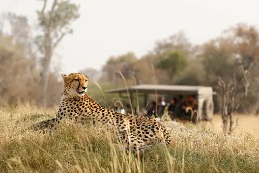 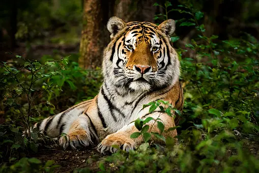  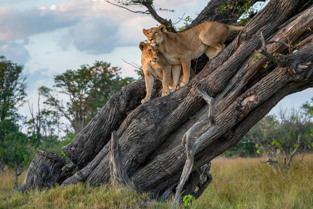 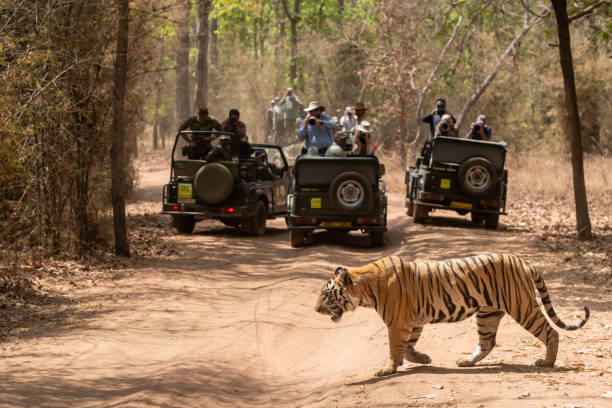 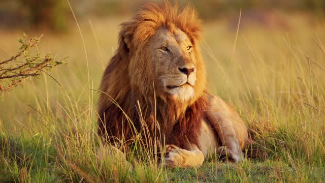 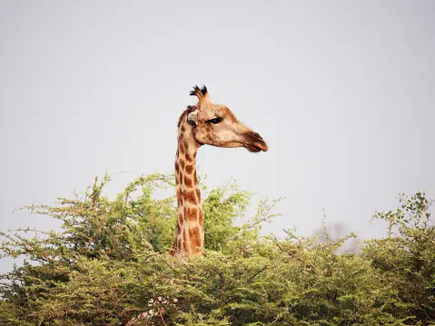 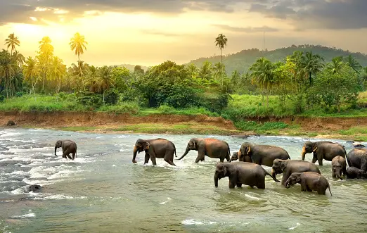 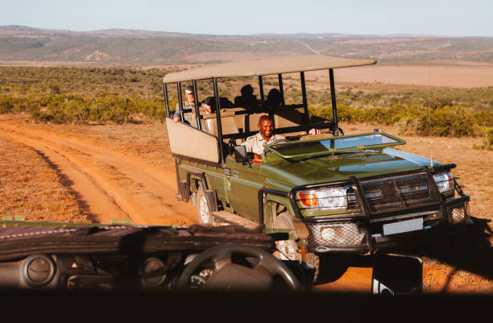 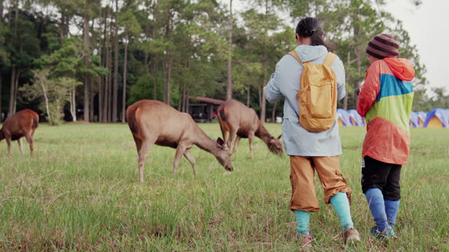
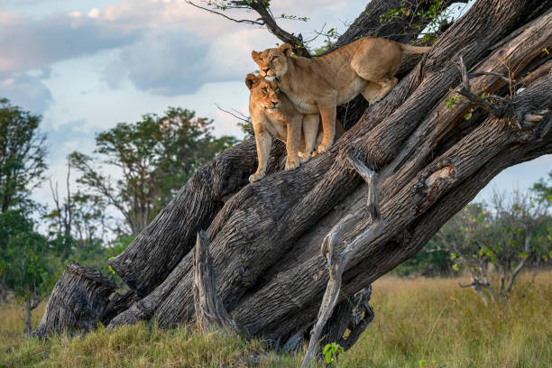 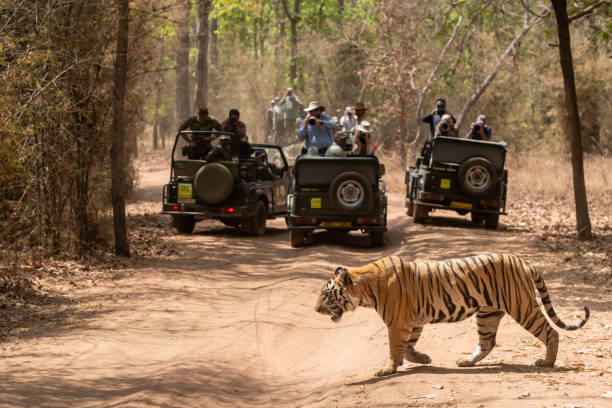 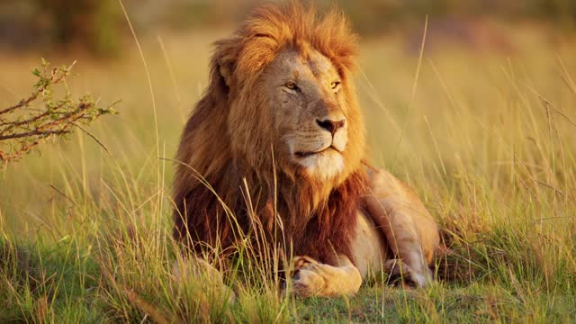 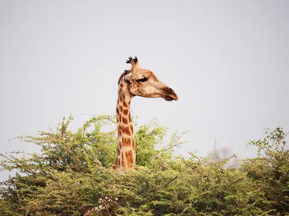 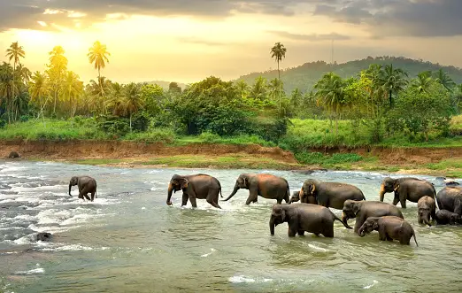 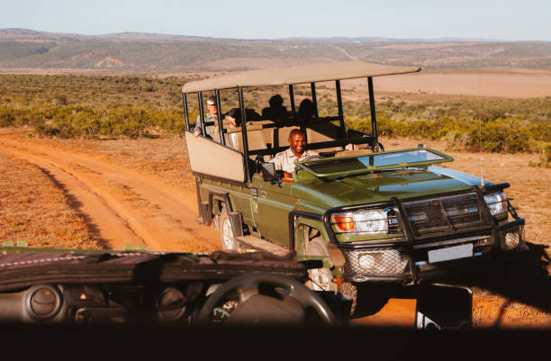 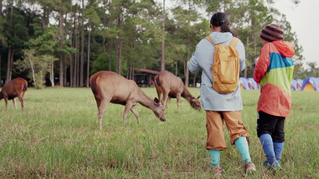 
Tembea Africa Contact Information